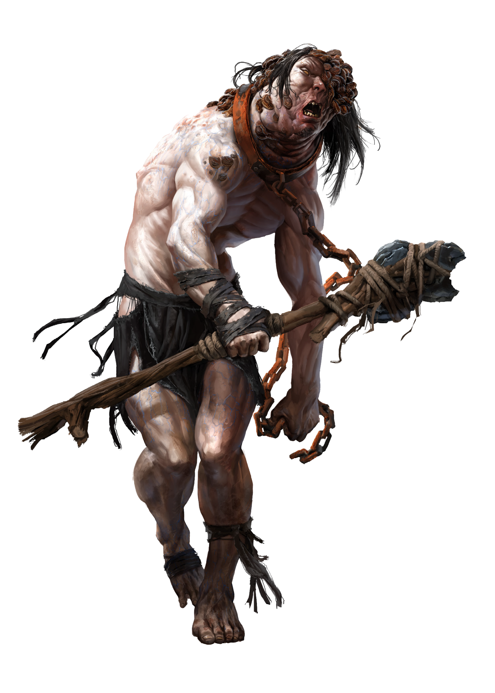

This is not a playable Clan in Degenesis: Alpha & Omega.
CLAN DOSSIER
Pandorians
Breeders and engines of evolution.
KatharSys p. 227

PANDORA CRATER
Beyond Humanity
Animals dig in the dirt, tearing out lumps that become separate from the mycelium gossamer with a crackle. Clouds of spores billow up and dissipate in the airstream. The creatures snort and shake; the tumors on their backs and necks beat like hearts. One of the tumors forms a gray, rugged hump covered in a thin layer of Sepsis.
A creature raises its head as if picking up a scent. Its eyes are like thick white jelly, blind and without pupils, but its face still resembles a human’s. It straightens itself and tears a battle axe from the dirt. It’s not an animal—but it certainly isn't completely human anymore.
ANCESTRY
An Unknown Origin
The sporination at the Pandora Crater is so dense that one can barely see their own hand held to their face. The filters of gas masks clog within minutes. This is why the area is largely unexplored. Expeditions could only pierce the veil and gaze at giant spore glands in the hill flanks, and oversized Fractal Stars and trilobites have been spotted in the ring valleys of the crater. There were no reports about humans or other mammals. For a long time, people thought that no one lived or could survive here. Until they found the Pandorians.
Their origin is unknown: their skulls are too misshapen to guess their ethnicity. They wear no Clan symbol, their bodies are not tattooed. Some Spitalians from the Spital think that the Pandorians have come from the East. Maybe they were explorers like the Spitalians themselves before Pollen’s Earth Chakra took hold of them.
DEGENERATION
An Antenna for the Earth Chakra
The Pandorians stomp and stumble past a platoon of Spitalians, huffing and puffing, never stopping to raise their axes. But when the Noumenon Vocalizers register an increased activity in the Chakra ether and the calls increase and overlap, the Pandorians react, too. They shake their heads and seem to try to pick up a scent. However, their noses are as clogged by the mycelium and as useless as their eyes. They do not see, smell, or hear anything. They instead feel creatures close to them. To them, their head is like an antenna that they turn only to meet the Chakra ether, often at bizarre angles—and rarely towards the enemy. They reflect the Earth Chakra’s excitement.
BREEDER
Engines of Evolution
A Pandorian’s body is covered in hardened variola, some of which bulge to form fist-sized eggs. In these variola, spores collect and are condensed under pressure. If such a variola is ever hit by a weapon, it explodes into a spore cloud with the sound of tearing flesh. However, the spores are only a preliminary phase. A Pandorian breeds Primer variations in the variola. Most of these are birthed within the body and feed from it until its death. They are similar to the Fractal Stars and send their byssus threads into the brain of the Pandorian. There they turn into nerve cords.
The Spitalians were once able to kill a pack of Pandorians and send tissue samples to the Spital. According to genetic analysis, Pandorians differ strongly from Psychonauts: Psychonauts are more human. While Homo Sapiens and Homo Degenesis share the same number of chromosomes—46—the Epigeneticists found up to 76 chromosomes in Pandorians. The number varies greatly, even within the same population: according to the analysis it correlates with the estimated age. That would mean that genes are induced via growth or via spores, and that the mutation history of the Fractal Star spawn is stored in the body. In fact, the core of Primer variations does not seem to be injected by exterior infestation, but seems to grow from the Pandorians themselves. These creatures at the Pandora Crater are breeders and engines of evolution.
TISSUE STASIS